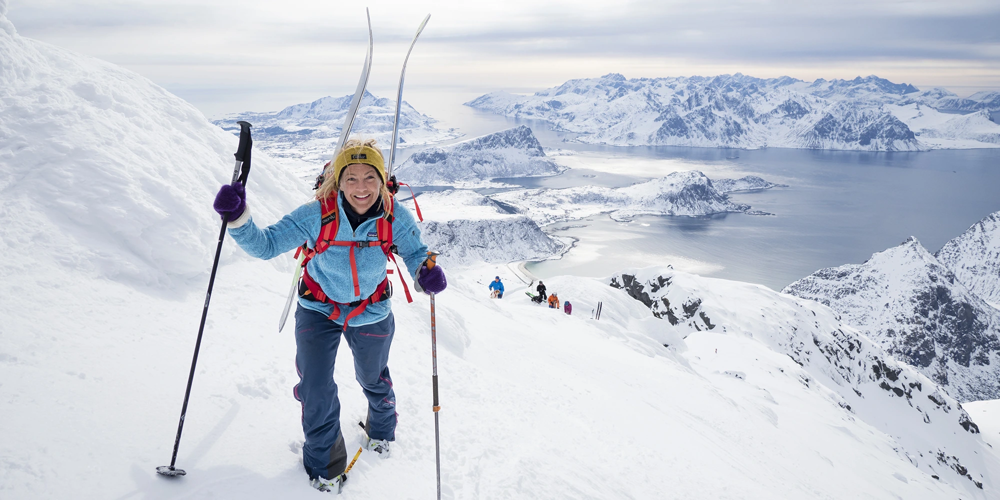
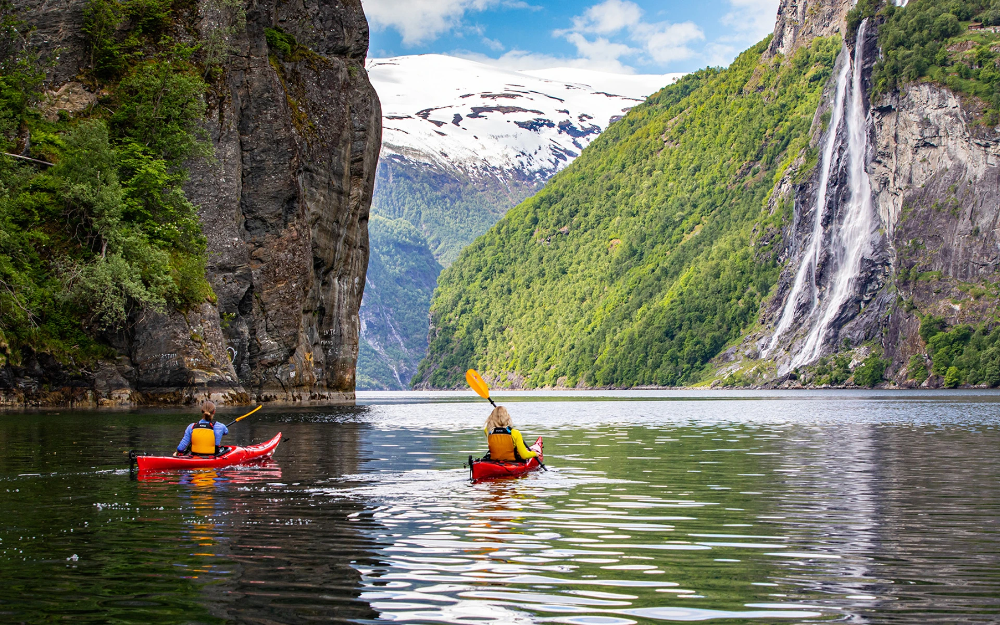

Outdoor Activities in Norway
Under is a short list of activities you can do while in Norway!
Under is a short list of activities you can do while in Norway!
Norway is a hiker’s paradise with endless trails for all levels. Popular destinations include the iconic Trolltunga and Preikestolen.
Cycling is a fantastic way to see Norway’s majestic landscapes. From gentle coastal rides to challenging mountain paths, you'll find a trail that suits you.
Winter in Norway is perfect for skiing enthusiasts. Whether you prefer alpine skiing or cross-country, places like Geilo and Trysil await you.
For water lovers, kayaking in the fjords or rafting in thrilling rivers is a must.
